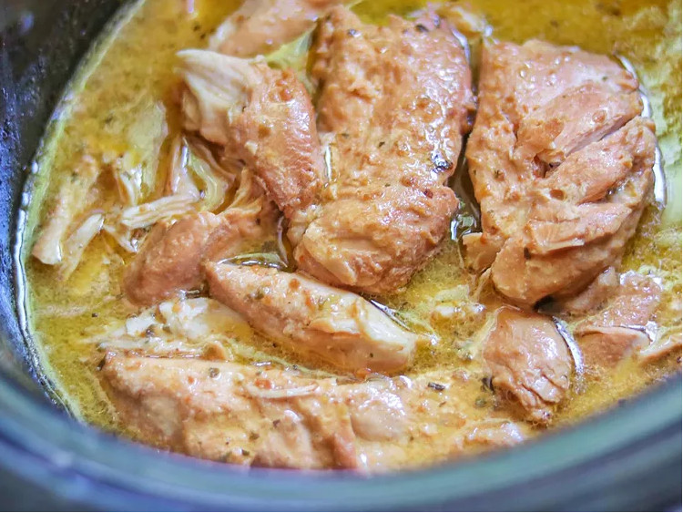

Crockpot Italian Chicken

You only need 3 ingredients for this crockpot Italian chicken with Italian dressing and Parmesan cheese.
Nothing could be easier than this for a weekday meal that's ready when you get home.
If you’re looking for easy, delicious meals, save this one! The prep could not be any quicker or easier, and the flavor is lovely. I served it with rice and asparagus, but it would be tasty over some angel hair or linguini pasta as well.
Ingredients
- 1 (16 ounce) bottle Italian dressing (such as Olive Garden℠ Signature Italian Dressing)
- 1/4 cup grated Parmesan cheese
- 4 boneless skinless chicken breasts
Steps
- Stir Italian dressing and Parmesan cheese together in a bowl.
- Place chicken in a slow cooker, and pour dressing mixture over chicken. Cover and cook on Low until chicken is tender, no longer pink in the center, and the juices run clear, about 8 hours.